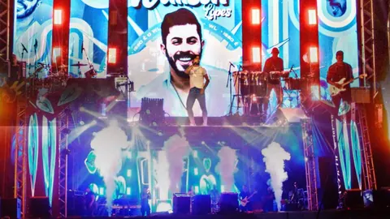
WALISON LOPES NASCIDO EM 05 DE JANEIRO DE 1993, NATURAL DA CIDADE DE CATENDE NO INTERIOR DO ESTADO DE PERNAMBUCO, PORÉM DESDE OS SEUS 8 ANOS DE IDADE, RESIDE NA CIDADE DE PALMARES - PE CAPITAL DA MATA SUL DO ESTADO.
O “WL” CHEGOU AO MERCADO FONOGRÁFICO DANDO INICIO AO SEU PROJETO EM 20 DE OUTUBRO DE 2019, APESAR QUE ESSE INICIO DEMOROU A ACONTECER DEVIDO A UM LONGO PERÍODO DE LUTA CONTRA SUA TIMIDEZ, INICIOU SEU PROJETO NA MELHOR ESCOLA QUE UM ARTISTA PODE TER: O BARZINHO, VOZ E VIOLÃO.
COM UMA ESTREIA BASTANTE DESEJADA, E SONHADA, ORGULHA-SE DA SUA TRAJETÓRIA COMO MÚSICO.
WALISON TEVE QUE DIVIDIR SEU TEMPO ENTRE ESTUDAR, TRABALHAR COM SUA MÃE EM RESTAURANTE(BAR) E MONTAR SEU PROJETO PARA DAR INICIO A UM SONHO DE CANTAR. HOJE, VIVE APENAS DA MÚSICA.
PROJETOS RODANDO NAS PLATAFORMAS DE STREAMING, CDS COM MÚSICAS ATUAIS, REPERTÓRIO NOVO DA ATUALIDADE, O WL TAMBÉM JÁ GRAVOU PROJETOS COMO "PRA BEBER E LEMBRAR 1 E 2" "WL NA PEGADA DO ARROCHA" MÚSICAS AUTORAIS COMO: "DUVIDO" "NOSSO FIM" LANÇADAS NAS PLATAFORMAS DE STREAMING, E NÃO PARA POR AÍ... RECENTEMENTE LANÇOU DURANTE A COPA, O “HEXA FORRÓ” SEU MAIS RECENTE CD LANÇADO NO SUAMUSICA.COM
A BANDA CONTA COM UMA Equipe de em média 13 ou mais pessoas — 01 vocalista, 05 músicos(bateria, baixo, guitarra, percussão, teclado) 05 produções, 02 organização geral.
O WL TEM SEU PROJETO ATIVO E MESMO SEM APOIO DE EMPRESÁRIO, ESCRITÓRIO, CONSEGUE, AINDA ASSIM, FECHAR SUA GRADE DE SHOWS MENSAIS COM MÉDIA DE 10 SHOWS, O QUE SE TORNA MUITO DIFÍCIL PARA UM ARTISTA INICIANTE, INDEPENDENTE.
MAS, DE TODA FORMA, CONSEGUE DRIBLAR E SE MANTER EM EVIDÊNCIAS LEVANDO SUSTENTO PARA CASA E FAZENDO O QUE AMA, QUE É CANTAR.
COM UM REPERTÓRIO MUITO PRA CIMA, SE INSPIRANDO SEMPRE NO SEGUIMENTO DO FORRÓ ESTILIZADO E TENDO COMO REFERÊNCIA: WESLEY SAFADÃO, NATTAN, XANDY AVIÃO, HENRY FREITAS, JONAS ESTICADO, WALLAS ARRAIS... ENTRE OUTROS DO SEGUIMENTO, FAZ DO SEU REPERTÓRIO E DO SEU SHOW SEREM MOMENTOS INESQUECÍVEIS, MANTENDO SEMPRE SUA IDENTIDADE, MESCLA ENTRE O FORRÓ DA ATUALIDADE, O SERTANEJO, PAGODE, FORRÓ DAS ANTIGAS... TUDO SEMPRE TRAZENDO SUA IDENTIDADE EM TUDO QUE FAZ.
mesmo sendo artista independente, lutando todos os dias por espaço no mercado, conseguimos levar nossa música, nosso show, por diversos locais e sendo sempre muito bem recebido pelo publico.
Walison Lopes, concentra sua agenda fazendo shows na mata sul do estado de Pernambuco, no Agreste, Litoral Pernambucano e litoral Alagoano, bem como na capital Pernambucana.
tivemos a honra de dividir palco com artistas nacionais, como: (REY VAQUEIRO, PRISCILA SENA, JONAS ESTICADO, PEDRINHO PEGAÇÃO... entre outros
No periodo junino, tivemos o prazer de está fazendo inauguração do CAMAROTE EXCLUSIVE no pátio de eventos LUIZ GONZAGA em CARUARU - PE. abrindo o maior e melhor São João do mundo.
Além da correria dos shows, estrada, palcos, o WL sempre procura se manter em evidência, atualizando gravando projetos, videos para alimentar suas redes sociais como o INSTAGRAM. Semanalmente tá sempre postando contéudos, gravando alguns clipes e atingendo números satisfatorio.
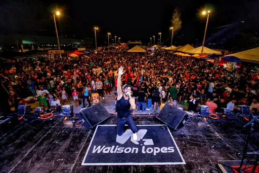
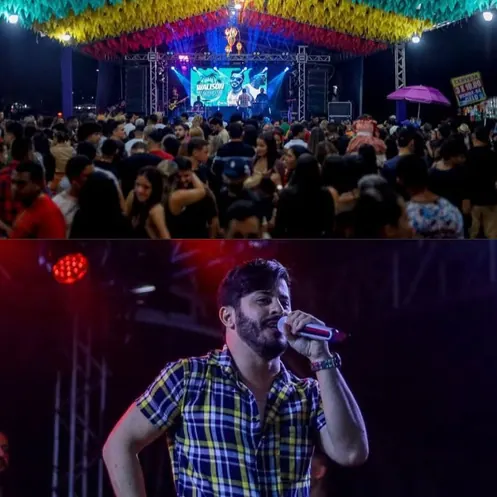
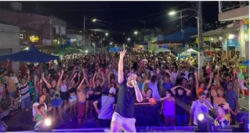
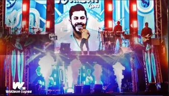
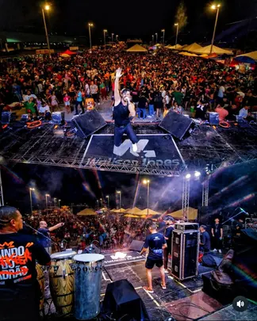
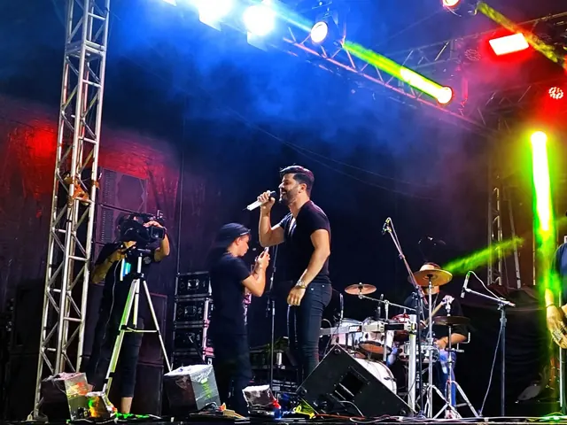
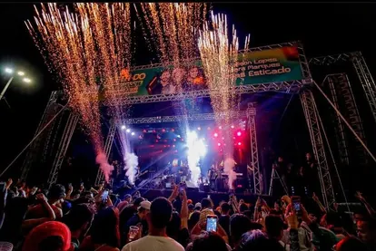
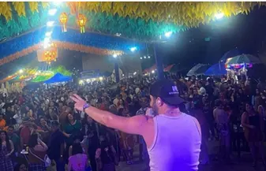
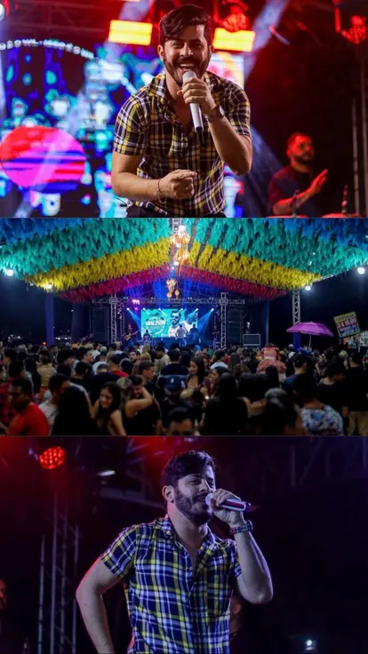
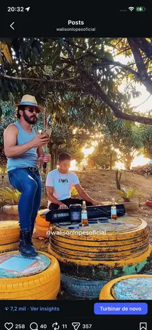
Projeto citado no release — lançado no Sua Música
O release informa os projetos e músicas, mas não fornece arquivos de áudio. Por isso, o player não simula faixas: os botões levam às plataformas, preservando a informação real.
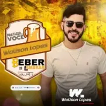
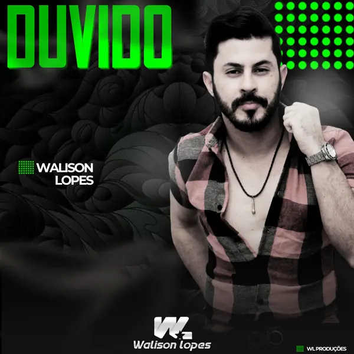
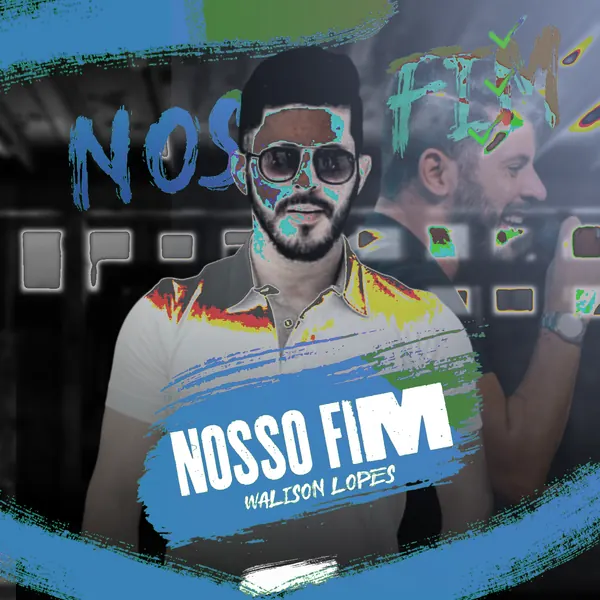
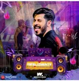
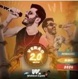
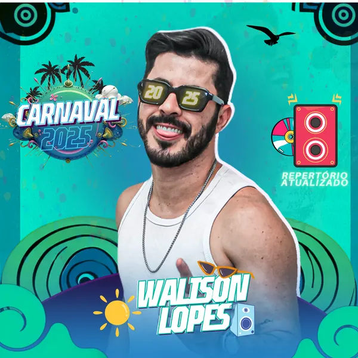
Para informações sobre contratação, utilize os contatos abaixo ou envie os dados do evento pela página de contratação.
Abrir página de contratação